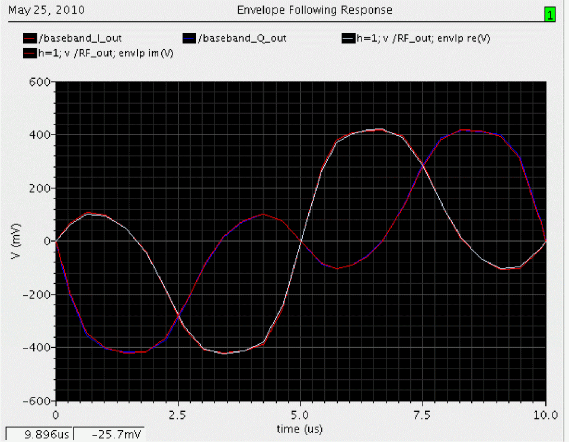
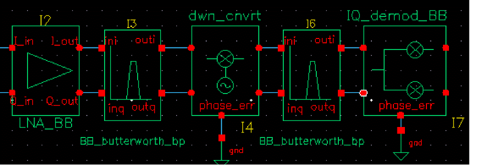
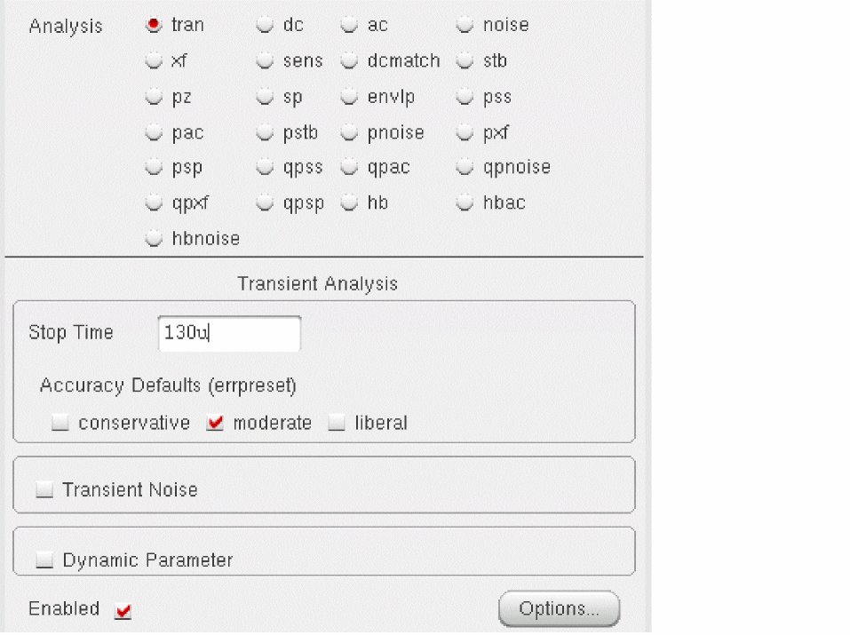
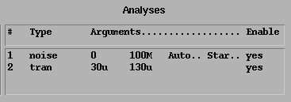

10
Top-down RF Design Methodology
This section describes a methodology for designing analog RF subsystems that fit into larger DSP systems. In particular, this section describes how to use a canonical set of top-down behavioral baseband models for exploring RF architectures in the analog design environment. These models come from the following categories in rfLib
-
Category top_dwnBB contains models of common RF function blocks.
- The default view of each model is the baseband view (called veriloga).
- All models in this category also have a differential passband view (called veriloga_PB).
The only exceptions are the BB_loss and VGA_BB models. They are meant only for baseband analysis and have no passband view. - Category top_dwnPB contains single-ended passband versions of the baseband models.
- Category measurement contains the instrumentation block and baseband signal generator models used to make RF measurements. These elements are not part of an RF architecture. They simply facilitate RF measurements and diagnostics.
- Category testbenches contains the test circuits used in this chapter to define the model specifications in the rfLib. Where possible, the models are specified in terms of standard RF measurements. The most precise way to describe a measurement is with a test circuit, set up instructions, and sample measurements. The circuits in the testbenches category serve that purpose
These models provide RF designers with a fast method to map RF system specifications into detailed RF designs. The baseband models facilitate fast evaluation of candidate RF architectures specified with DSP metrics. The passband views of the baseband models provide a behavioral system testbench for checking detailed designs of individual RF system components.
Baseband models are behavioral models and all behavioral models sacrifice some accuracy for increased simulation speed. Such sacrifices are usually acceptable in architectural studies because many implementation-dependent details do not affect high level decisions. The modeling approach taken in top-down design is to simulate only those effects that drive the decisions at hand.
Baseband modeling in no way replaces passband modeling. Some effects missed by equivalent baseband models can affect high level decisions. However, the application of baseband models early and passband models later minimizes the number of slow simulations needed at the lower levels of design abstraction. Baseband models help you to quickly weed out designs that would surely fail tests simulated with passband models.
The success of a modeling approach to top-down design hinges on knowing how the models fit into the design flow and knowing exactly what each modeling parameter means. This chapter has two goals:
- To describe the top-down design flow, from a modeling perspective, for baseband modeling
- To define, as clearly and concisely as possible, the parameters that specify the models
Top-Down Design of RF Systems
Ideally, the digital signal processing, or DSP, team specifies an RF subsystem that fits snugly into the DSP system. A snug fit means that
- The specified RF subsystem does exactly what it needs to do at the lowest possible cost
- A functional specification exists that describes requirements for the RF subsystem
In a top down design flow like the one shown in Figure 10-1, the DSP team writes a functional specification for an RF subsystem that has not yet been designed. The functional specification describes what the RF subsystem should and should not do without describing how to build the RF subsystem.
The functional specification supplied by the DSP team describes the RF subsystem at the highest possible level of abstraction. At this point behavioral models can be specified rather than measured. This early in the design cycle, the functional specification might well be incomplete or inconsistent. A good top-down design flow can detect problems, such as omissions and inconsistencies in the design, early in the design cycle when they are easier and less expensive to fix. Problems detected later in the design cycle can be much more costly and very difficult to resolve.
Using the functional specification supplied by the DSP team and the behavioral baseband models from rfLib, the RF system designers can easily explore RF architectures in the analog design environment. The baseband models facilitate fast evaluation of candidate RF architectures specified with DSP metrics. By switching to the passband views of the baseband models, the RF design team maps DSP measurements to RF measurements. The passband views of the baseband models provide a behavioral system testbench for checking detailed designs for individual system components.
Using the functional specification and exploring and testing with the baseband and passband models, the RF team can efficiently create a detailed design specification that fully describes the RF subsystem. The design specification can include detailed instructions for building the RF subsystem. At this stage of the design cycle, everything that is known about the design is described at the lowest level of abstraction.
You can now extract behavioral models of a detailed design from simulated measurements. The problem remains that detailed designs usually do not exist until the project is complete. To jump directly to a detailed design implies that the design flow is bottom up. Bottom up flows are important in many projects, but not in all.
DSP and RF designers sometimes have trouble communicating through specifications because the two groups deal with different metrics. For example, DSP designers deal with bit error rates and error vector magnitude statistics whereas RF designers deal with intercept points and noise figures.
The new models described here are designed to help RF system designers in two ways.
- First, the baseband models enable RF system designers to quickly explore the RF architectural space, as specified by the DSP metrics, while letting the RF engineers specify the RF system components with RF metrics. The circuit implementations of the RF system components are easier to design and test when the components are specified with standard RF metrics.
- Second, the baseband models can be switched quickly to a passband views where the RF system model can generate end-to-end RF metrics. With end-to-end metrics, the new view can quickly simulate how the detailed design of a particular RF system component affects end-to-end performance.
Use Model for Top Down Design
The following steps outline the RF design process with focus on the early phases of the design as illustrated in Figure 10-1.
Figure 10-1 The Top Down Design Flow and Use Model
Specify the RF Subsystem in Terms of DSP Metrics
Before you begin the RF subsystem top-down design flow, the DSP design team should completely specify the RF subsystem in terms of DSP metrics. This preliminary step distinguishes the end of the DSP design flow from the beginning of the RF top down design flow and formally hands-off the RF subsystem design specifications to the RF design team.
Explore Candidate Architectures with Baseband Models
The first step in top down RF design is to select a candidate RF architecture. An RF architecture is a set of interconnected RF function blocks that, taken together, describe how a receiver or transmitter operates. You specify each function block in terms of standard RF metrics such as IP3, gain, bandwidth, and noise figure.
The models you use early in the design cycle as you explore candidate RF architectures must run fast. Each simulations can span hundreds of symbols and each symbol can easily span thousands of RF carrier cycles. The space defined by the function block specifications in each candidate architecture is far too vast to explore with slow, highly precise models. Models used for architectural exploration must quickly reduce the design space down to a size that can be explored with more precision.
The most efficient models for architectural exploration suppress the RF (IF) carrier and are called baseband models. In contrast, the passband models (introduced in the next step) do not suppress carriers.
You can use the Circuit Optimizer during architectural exploration to help balance the function block specifications for a candidate architecture. For example, you can use the Circuit Optimizer to minimize RMS EVM while ensuring that other measurements stay within acceptable limits.
When you have determined the nominal specifications for each function block, you must put tolerances around them. In the analog world specifications without tolerances are meaningless. The tolerance space is usually explored with some mix of experience, feasibility, a variety of analyses, and outright arbitrary decisions.
There are several ways that you can use the baseband models to test candidate tolerances as well as to determine some tolerances analytically.
One way to test a candidate set of tolerances is to run a Monte Carlo analysis on the metric of interest, like RMS, EVM, or signal-to-noise ratio (SNR).
Another approach is to use the Circuit Optimizer in reverse, as a de-optimizer, to determine worst case performance.
Yet another approach is to compute each tolerance separately from a parametric plot. When you have determined all but 2 or 3 tolerances, you can use a multidimensional parametric analysis to map out the performance space and easily identify the remaining tolerances.
Switch to Passband Models and Create an RF System Testbench
The second step in top down RF design is to create a passband view of the system model.
The passband system model performs two functions:
- Confirms that the filters perform as expected.
- Creates an end-to-end testbench that you can use to design the individual function blocks.
For computational efficiency during system passband testing, at any one time, model one or two selected function blocks at the device level. Model all other blocks in the system behaviorally using passband models.
Derive the tolerances by performing the same Monte Carlo analysis or Circuit Optimizer analysis you used to test the function block tolerances in the first step, but this time replace the DSP metrics with end-to-end RF metrics. After you know how far the end-to-end RF metrics can vary, you can insert a device-level model of a function block into the testbench to see how close it drives the system toward violating a derived end-to-end RF specification.
Implement the Function Blocks with Active and Passive Devices
The last step in the top down design process is to implement the function blocks with device models. Because the function blocks are specified in terms of standard RF metrics, you can easily measure the modeling parameters to make sure they fall within the specified tolerances. You can also insert the measured parameters back into the baseband model of the system to check the DSP metrics, or insert the device-level model directly into the passband testbench to check the derived end-to-end RF specifications.
Baseband Modeling
A baseband model for an RF function block simulates what happens to the baseband representation of a signal as it passes through the block. A baseband model maps input baseband signal trajectories into output baseband signal trajectories. If you sample a baseband signal periodically in time and plot the samples in the complex plane, the resulting scatter plot shows the symbol constellation.
Figure 10-2 mathematically defines a baseband representation of a passband signal. The i and q signals are the real and imaginary parts of a complex signal that rides on the two phases of an RF carrier.
Figure 10-2 Baseband Representation of a Passband Signal
Baseband models simulate only what happens to the carrier fundamental. Consequently, they only account for non-linearities with odd symmetry. Non-linearities with even symmetry produce no output at the carrier fundamental; they affect the carrier fundamental only when cascaded. For example, a second order non-linearity in one block can create a DC offset at it’s output. Upon passing through a subsequent block with another second order non-linearity, the DC offset can mix with the carrier to affect the output carrier fundamental. You should model cascaded blocks producing unfiltered even harmonics as a single baseband model rather than as separate baseband models cascaded together. The non-linearities that most often dominate performance have odd symmetry.
Example Comparing Baseband and Passband Models
The example in this section walks you through an Envelope analysis that illustrates the relationship between baseband and passband models. Following the simulation, you plot the baseband equivalent output signals as computed by the baseband and passband circuits.
The BB_test_bench schematic shown in Figure 10-3 illustrates the difference between passband and baseband modeling. This circuit is located in the rfExamples library.
Figure 10-3 The BB_test_bench Schematic
The BB_test_bench circuit shows a passband circuit (across the top of the schematic) and its baseband equivalent circuit (across the bottom of the schematic). The same baseband signals drive both circuits but only the passband circuit mixes the baseband signals up to RF. The power amplifier is not matched to either input or output impedances and both impedances are reactive.
Before you start, perform the setup procedures described in
Opening the Baseband Test Bench Circuit
-
In the CIW, choose File – Open.
The Open File form appears. - In the Open File form,
-
Click OK.
The Schematic window for the BB_test_bench appears. -
In the Schematic window, choose Tools – Analog Environment.
The ADE window opens.
You can also choose Tools – Analog Environment – Simulation in the CIW to open the ADE window without opening the design. You can open the design later by choosing Setup – Design in the ADE window and choosing the BB_test_bench in the Choosing Design form.
Choosing Simulator Options
-
Choose Setup – Simulator/Directory/Host in the ADE window.
The Simulator/Directory/Host form appears. -
In the Simulator/Directory/Host form, specify the following:
- Choose spectre for the Simulator.
- Type the name of the project directory, if necessary.
-
Highlight the local, remote, or distributed button to specify the Host Mode.
For remote simulation, type the name of the host machine and the remote directory in the appropriate fields. For distributed simulation, fill out the other fields that appear.
The completed form appears like the one below.
- In the Simulator/Directory/Host form, click OK.
-
In the ADE window, choose Outputs – Save All.
The Save Options form appears. -
In the Select signals to output (save) section, be sure allpub
is highlighted.
- In the Save Options form, click OK.
Setting Up Model Libraries
-
In the ADE window, choose Setup – Model Libraries.
The Model Library Setup form appears. -
In the Model Library File field, type the full path to the model file including the file name,
rfModels.scs. -
In the Model Library Setup form, click Add.
The completed form appears like the one below.
- In the Model Library Setup form, click OK.
- In the ADE window, use Analysis - Disable to disable any analyses you ran previously. (Check the ADE window to verify whether or not an analysis is enabled.)
Setting Up the Envelope Analysis
-
Choose Analyses – Choose in the ADE window.
The Choosing Analyses form appears. -
In the Choosing Analyses form, click envlp.
- Enter ff in the Clock Name field.
-
Enter
10uin the Stop Time field. - In the Output Harmonics cyclic field, select Number of harmonics.
-
Enter
1in the Number of harmonics field. - Select moderate for the Accuracy Defaults.
The correctly filled out form appears below.
- In the Choosing Analyses form, click OK.
Running the Simulation
-
In the ADE window, choose Simulation – Netlist and Run.
The output log file appears and displays information about the simulation as it runs.
Look in the CIW for a message that says the simulation completed successfully.
Plotting the Baseband Equivalent Output Signals
-
In the ADE window, choose Results-Direct Plot-Main Form.
The Direct Plot form appears. -
In the Direct Plot form, do the following:
- Highlight Replace for Plotting Mode.
- Highlight envlp for Analysis.
- Highlight Voltage for Function.
-
Highlight time for Sweep.
The Net selection appears in the Select cyclic field and the label Description: Envelope Voltage vs Time appears. -
Following the message at the bottom of the Direct Plot form
Select Net on schematic...
Click thebaseband_I_outnet.
-
In the Direct Plot form, do the following:
- Highlight Append for Plotting Mode.
- Leave Voltage set for Function and time set for Sweep.
-
Following the message at the bottom of the Direct Plot form
Select Net on schematic...
Click thebaseband_Q_outnet.
The second trace is added to the waveform window. Both baseband equivalent output signals for the baseband model are plotted.
-
In the Direct Plot form, do the following:
- Leave Append for Plotting Mode and Voltage for Function.
- Highlight harmonic time for Sweep.
- Highlight Real for Modifier.
-
Following the message at the bottom of the form,
Select Harmonic Number on this form...
Select 1 for harmonic number. -
Following the next message at the bottom of the form
Select Net on schematic...
RF_outnet.
A third trace is added to the waveform window.
- In the Direct Plot form, do the following:
-
Following the message at the bottom of the form
Select Net on schematic...
Click theRF_outnet again.
A fourth trace is added to the waveform window. Both baseband equivalent output signals for the passband model are added to the plot.

In the waveform display window you should now see what at first appears to be two traces. When you look more closely, you should see that each trace is actually two traces, one nearly on top of the other, making a total of four traces.
The plot resulting from this example illustrates how well baseband modeling corresponds to the time-varying fundamental Fourier component computed by Envelope analysis and raises two questions:
- Why use baseband models when Envelope analysis gives the same results?
- Why not use baseband models all the time?
Running a transient analysis with only the baseband models answers the first question. If from the ADE window you deactivate the passband circuit by setting the carrier_pb variable to zero, disable the Envelope analysis, and set up and run a 10μs transient analysis, you observe the same baseband results, but the transient simulation runs over 100 times faster.
Examining the Envelope results answers the second question. If you look closely at both waveforms you notice that the baseband waveforms clip at a slightly lower level than the Envelope waveforms. This is because hard limiting of the carrier generates higher-than-third-order harmonics and the behavioral baseband model only simulates third order non-linearities.
rfLib Library Overview
The rfLib include three kinds of models to support baseband modeling:
The instrumentation models provide stimuli, diagnostics, and performance metrics relevant to the DSP system.
Both the linear models with memory and the non-linear memoryless models simulate the function blocks in an RF architecture and are specified in terms of common RF metrics. The RF function block models include input referenced white Gaussian noise as specified by noise figure. The rfLib includes models for the following RF function blocks—amplifiers, mixers, filters, and phase shifters; where filters includes single resistors, capacitors, and inductors.
The non-linear models simulate AM/AM conversion [1] with a third-order polynomial that saturates at the peak of the transfer curve. The polynomial is specified by the gain and either the input-referred IP3 or the output-referred 1 dB compression point. Only the non-linear baseband models simulate AM/PM conversion. AM/PM conversion [1] is an important effect that is hard, if not impossible, to simulate with passband behavioral models. Figure 10-4 shows the basic baseband non-linearity.
Figure 10-4 Basic, Baseband Non-Linearity
The linear models are the key to simulating loading effects at baseband. In RF integrated circuits, loading effects are important because it is often hard to integrate impedance matching networks. The baseband models of reactive elements differentiate our approach from the spreadsheet-based approaches to RF system design. The baseband capacitor and inductor models (cap_BB and ind_BB in top_dwnBB) let you simulate reactive loading effects in the time domain, where non-linearities are more naturally modeled.
The baseband models of reactive elements also play a key role in modeling filters. Most digital communications text books [1,2] explain that you can model a passband transfer function at baseband by simply frequency-shifting the transfer function. What these books do not describe is how to implement the resulting transfer function in a general circuit simulator such as Spectre® circuit simulator RF analysis (SpectreRF). The shifted transfer function usually lacks complex conjugate symmetry about zero frequency and therefore has a complex impulse response.
The first consequence of modeling RF function blocks at baseband is that all equivalent baseband models have four terminals instead of two:
- One set of terminals represents the in-phase signals, iin(t) and iout(t)
-
The other set of terminals represents the quadrature signals, qin(t) and qout(t)
Both sets of terminals are illustrated in Figure 10-2.
The mathematics illustrated in Figure 10-5 and Figure 10-6 summarize the ideas behind a time-varying coordinate transformation that models reactive elements at baseband. The mathematics apply to capacitors as well as inductors.
There is a well-documented but little-known electro-mechanical analogy for the derivation of the inductor baseband equivalent model. The four inductor terminals resemble the stator windings of a two-phase rotating machine with shaft speed equal to the RF carrier frequency. Modulation is mathematically analogous to the flux linking a stator winding due to currents in orthogonal rotor windings. The flux depends on the shaft angle just as a modulated signal depends on the carrier phase. Transforming the vectorial equation for v=Ldi/dt to the rotor reference frame suppresses the RF carrier and introduces a speed voltage [3,4,5,6,7,8,9], or back electro-motive force (back EMF), that couples the differential equations.
An expression for the real current (i.e. the passband current) appears in Figure 10-6. The real current is modeled as the projection of a two-dimensional rotating vector onto a stationary axis, the real axis. The vector rotates with an angular velocity equal to the RF carrier frequency.
Figure 10-5 Passband Current for an Inductor
The rotating vector also has a projection onto another stationary axis orthogonal to the real axis. In the baseband literature, the orthogonal projection is the Hilbert transform of the real signal. The constitutive relationship of the inductor, v=Ldi/dt, is expressed in terms of coordinates in a reference frame that rotates with the vector.
Figure 10-6 shows the constitutive inductor relationship between voltage and current in the rotating reference frame. Note that the trigonometric terms, the terms that slow simulation speed, are gone and the two projections are now coupled through speed voltages. The term speed voltage comes from the fact that the voltages depend on the angular speed of the rotating reference frame. In motor theory, that speed is the shaft speed. Speed voltage is similar to the back EMF in a motor. Because of speed voltages, baseband models of filters and reactive elements must have their carrier frequency specified. The carrier frequency is the frequency for which the baseband signals are referenced. For example, the carrier frequency for an RF filter would be the RF frequency while the carrier frequency for an IF filter would be the IF frequency.
Figure 10-6 Relationship Between Voltage and Current for an Inductor
The baseband counterparts of the passband filter models are built up from inductors and capacitors modeled in the rotating reference frame.
In the complex expression for v=Ldi/dt, if you replace d/dt with jω, you find that the impedance of the inductor changes from jLω to jL(ω+ωrf). The same holds for capacitors, which means a filter transfer function, H(ω), has a baseband equivalent equal to H(ω+ωrf). This is simply the original passband transfer function shifted to the left by an amount equal to the carrier frequency. Our time domain baseband models are consistent with the text book frequency domain explanation of baseband modeling.
Use Model and Design Example
This section describes how to use the baseband models during the architectural design phase. The following examples show you how to
-
Construct a baseband model for a simple receiver
- Use the Circuit Optimizer to balance specifications among the function blocks
- Create a passband testbench for the receiver
The design goals were chosen arbitrarily. The example is meant simply to illustrate how to use the library and is a derivative of the design found in [10]. If you find that some parameters are not specified, leave them as default values. You construct the receiver from left to right, from input to output.
Opening a New Schematic Window
-
In the CIW, choose File – New – Cellview.
The Create New File form appears. -
In the Create New File form,
- Choose my_rfExamples in the Library Name cyclic field. (Choose the editable copy of rfExamples you created as described in Chapter 3.)
-
Enter
receiver_examplein the Cell Name field. -
Select Composer-Schematic in the Tool cyclic field.
schematicappears in the View Name field. -
The completed form appears like the one below.

-
Click OK.
An empty Schematic window for the receiver_example appears.
Opening the Analog Environment
-
In the Schematic window, choose Tools – Analog Environment.
The ADE window opens.
The Library, Cell, and View names appear in the Design section of the ADE window. - Set the simulator options from the Simulator window as described in “Choosing Simulator Options”.
- Set up the model libraries from the Simulator window as described in “Setting Up Model Libraries”.
Constructing the Baseband Model for the Receiver
Construct the receiver in the Schematic window by adding blocks from left to right, from input to output, as listed in Table
Except for the resistor, ground, and port models (which come from the analogLib), all blocks come from the rfLib. Unless otherwise instructed, leave the port resistances at their default value of 50 Ohms.
| Block Name and Reference | Element Name | Library and Category |
|---|---|---|
|
CDMA signal source — See Adding the CDMA Signal Source |
||
|
Driver — See Adding the Driver |
||
|
Low noise amplifier — See Adding the Low Noise Amplifier |
||
|
Butterworth bandpass filter — See Adding a Butterworth Band Pass Filter |
||
|
RF-to-IF mixer — See Adding an RF-to-IF Mixer |
||
|
Butterworth bandpass filter — See Adding Another Butterworth Bandpass Filter |
||
|
IQ demodulator — See Adding an IQ Demodulator |
||
|
Butterworth lowpass filters (create two) — See Adding Two Butterworth Lowpass Filters |
||
|
Instrumentation model — See Adding an Instrumentation Block |
||
|
Terminator — See Adding an Instrumentation Terminator |
||
|
Grounds—attach to RF-to-IF mixer, IQ demodulator, and Instrumentation model |
Adding the CDMA Signal Source
Add the first receiver block, a CDMA signal source (CDMA_reverse_xmit), to the schematic.
-
In the Schematic window, choose Add – Instance.
The Add Instance form appears. It may be empty or it may display information for a previously added element. The default for the View field issymbol. -
In the Add Instance form, click Browse.
The Library Browser - Add Instance form appears. -
In the Library Browser - Add Instance form,
- If necessary, click Show Categories to display the Category column so you can view the elements (or cells) in the rfLib by category.
-
In the Libraries column, click rfLib to display categories of elements in rfLib.
The Everything category is displayed by default and all cells in rfLib are listed in the Cells column. (In the Add Instance form, rfLib displays in the Library field.) - In the Category column, click measurement to list only the cells in the measurement category.
- In the Cell column, click CDMA_reverse_xmit.
In the Library Browser, cell CDMA_reverse_xmit
In the Add Instance form,-
rfLibappears in the Library field -
CDMA_reverse_xmitdisplays in the Cell field -
symboldisplays in the View field
The CDF parameters for the element and their default values appear at the bottom of the form.
-
To place a CDMA_reverse_xmit block in the schematic,
-
Move the cursor over the Schematic window.
The outline for the CDMA_reverse_xmit symbol is attached to the cursor. -
Move the cursor near the top left corner of the schematic and click to place the CDMA_reverse_xmit block.
This block models a CDMA signal source. -
Click Esc to remove the symbol from the cursor.

-
Move the cursor over the Schematic window.
Adding a Resistor to the CDMA Signal Source
Because this example does not use the binary output nodes (i_bin_node and q_bin_node) on the CDMA signal source, connect a resistor between these nodes to avoid unused pin warnings.
-
In the Libraries column of the Library Browser - Add Instance form, click analogLib to display elements in analogLib.
If Show Categories is selected, the Everything category is displayed by default and all cells in analogLib are listed in the Cells column. - Scroll through the list of cells in analogLib to locate the resistor cell, res.
-
Click res in the Cell column.
The cell res and it’s default view symbol are both selected.
In the Add Instance form,-
analogLibdisplays in the Library field -
resdisplays in the Cell field -
and
symboldisplays in the View field
The CDF parameters for the element and their default values appear at the bottom of the form.
-
- Move the cursor over the Schematic window.
-
Click to place the top resistor terminal in line with the top binary output node (
i_bin_out) on the lower right side of the CDMA_reverse_xmit block - Click Esc to remove the symbol from the cursor.
Wiring the Resistor to the CDMA Signal Source
Wire the resistor to the binary outputs, i_bin_node and q_bin_node, of the CDMA signal source.
- To wire the resistor to the CDMA_reverse_xmit block, in the Schematic window choose Add - Wire (narrow).
-
Click
i_bin_nodeon theCDMA_reverse_xmitblock then move the cursor and click the top node of the resistor. -
Click
q_bin_nodeon theCDMA_reverse_xmitblock then move the cursor and click the bottom node of the resistor. -
Click Esc to stop wiring.
The CDMA signal source and resistor wired together appear as follows.
Adding the Driver
Add a driver block to the right of the CDMA signal source block.
- In the Schematic window, choose Add – Instance to display the Add Instance form.
- In the Add Instance form, click Browse to display the Library Browser - Add Instance form.
-
In the Library Browser - Add Instance form, make the following selections.
Library Category Cell View
At the top of the Add Instance form, - Move the cursor over the Schematic window.
- Click to place the BB_driver to the right of the CDMA_reverse_xmit block. Align the input pins of the driver with the analog output pins of the CDMA signal source.
- Click Esc to remove the symbol from the cursor.
Wiring the Signal Source to the Driver
- To wire the BB_driver block to the CDMA_reverse_xmit block, in the Schematic window choose Add – Wire (narrow).
-
Click
i_out_nodeon the CDMA_reverse_xmit block then clickI_inon the BB_driver block. -
Click
q_out_nodeon the CDMA_reverse_xmit block then clickQ_inon the BB_driver block. -
Click Esc to stop wiring.
The schematic now appears as follows.
Modifying Parameter Values for the Driver
Edit the value of the BB_driver CDF parameter dBm-out@1v peak in driver as follows.
-
Choose Edit – Properties – Objects in the Schematic window.
The Edit Object Properties form appears. You use this form to change the values of CDF (component description format) properties for the driver and modify the schematic for this simulation. - In the Schematic window, click the BB_driver block.
- The Edit Object Properties form changes to display information for the BB_driver block
-
Change the dBm-out@1v peak in parameter value as follows.
Parameter Name Value
The driver converts 1 peak volt from the CDMA signal source to −16 dBm referenced to the output resistance of the driver. -
Click OK in the Edit Object Properties form.
The form closes.
Adding the Low Noise Amplifier
Add a low noise amplifier to the right of the driver.
-
In the Schematic window, choose Add – Instance to display the Add Instance form.
The Add Instance form appears. It may be empty or it may display information for a previously added element. - In the Add Instance form, click Browse to display the Library Browser - Add Instance form.
-
In the Library Browser - Add Instance form, make the following selections. (If necessary, click Show Categories at the top of the Library Browser, to display the Category column.)
Library Category Cell View
In the Library Browser, cell LNA_BB
At the top of the Add Instance form,-
rfLibdisplays in the Library field -
LNA_BBdisplays in the Cell field -
symboldisplays in the View field
The CDF parameters for the element and their default values display at the bottom of the LNA_BB Add Instance form.
-
- Move the cursor over the Schematic window. The outline for the LNA symbol is attached to the cursor. Align the input pins of the LNA with the output pins of the driver.
- Click to place the LNA_BB block to the right of the BB_driver block.
- Click Esc to remove the symbol from the cursor.
Wiring the Driver to the LNA
- To wire the LNA_BB block to the BB_driver block, in the Schematic window choose Add - Wire (narrow).
-
Click
I_outon the BB_driver block then clickI_inon the LNA_BB block. -
Click
Q_outon the BB_driver block then clickQ_inon the LNA_BB block. -
Click Esc to stop wiring.
The schematic now appears as follows.
Modifying Parameter Values for the LNA
-
Edit the CDF parameter values for the LNA.
-
Choose Edit – Properties – Objects in the Schematic window.
The Edit Object Properties form appears. You use this form to change the list of CDF (component description format) properties for the LNA and modify the schematic for this simulation. -
In the Schematic window, click the LNA.
The Edit Object Properties form changes to display information for the LNA. -
Change the CDF parameter values for the LNA as follows.
Parameter Name Value
-
Choose Edit – Properties – Objects in the Schematic window.
-
Click OK in the Edit Object Properties form.
The form closes.
Adding a Butterworth Band Pass Filter
Add a Butterworth band pass filter to the right of the low noise amplifier.
-
In the Schematic window, choose Add – Instance to display the Add Instance form.
Information for the LNA is still displayed in the form. - In the Add Instance form, click Browse to display the Library Browser - Add Instance form.
-
In the Library Browser - Add Instance form, make the following selection.
Library Category Cell View
In the Library Browser, cell BB_butterworth_bp
At the top of the Add Instance form, - Move the cursor over the Schematic window. The outline for the filter symbol is attached to the cursor. Align the input pins of the filter with the output pins of the LNA.
- Click to place the BB_butterworth_bp block to the right of the LNA_BB block.
- Click Esc to remove the symbol from the cursor.
Wiring the LNA to the Filter
- To wire the BB_butterworth_bp block to the LNA_BB block, in the Schematic window choose Add – Wire (narrow).
-
Click
I_outon the LNA_BB block then clickinion the BB_butterworth_bp block. -
Click
Q_outon the LNA_BB block then clickinqon the BB_butterworth_bp block. -
Click Esc to stop wiring.
The schematic now appears as follows.
Modifying Parameter Values for the Band Pass Filter
Edit the CDF parameter values for the Butterworth band pass filter.
-
Choose Edit – Properties – Objects in the Schematic window.
The Edit Object Properties form appears. You use this form to change the list of CDF (component description format) properties for the filter and modify the schematic for this simulation. -
In the Schematic window, click the filter.
The Edit Object Properties form changes to display information for the filter. - Edit the parameter values to match those in Table 10-2.
-
Click OK.
Table 10-2 CDF Parameter Values for the Butterworth Filter
Parameter Name Value
Specify the Carrier frequency parameter value for the baseband equivalent model of the Butterworth band pass filter, just as you do for any reactive element. As shown in Figure 10-6, the carrier frequency is used to compute speed voltages. Because filters are built up from inductors and capacitors which have speed voltages, you must specify the carrier frequency for filters.
When a filter follows an RF-to-IF mixer, its Carrier frequency parameter value is the IF frequency.
- The Carrier frequency is the frequency value to which the baseband signals are referenced.
- The Center frequency is the frequency for which a filter is designed. The Center frequency parameter value for a bandpass filter does not have to equal the Carrier frequency parameter value.
Adding an RF-to-IF Mixer
Add an RF-to-IF mixer (dwn_cnvrt) block to the right of the bandpass filter block.
-
In the Schematic window, choose Add – Instance to display the Add Instance form.
The Add Instance form appears. It may be empty or it may display information for a previously added element. - In the Add Instance form, click Browse to display the Library Browser - Add Instance form.
-
In the Library Browser - Add Instance form, make the selections indicated in Table 10-3.
Table 10-3 Library Browser selections for the RF to IF Mixer
Library Category Cell View
In the Library Browser, cell dwn_cnvrt (the RF-to-IF mixer) and it’s default view symbol are both selected.
At the top of the Add Instance form,-
rfLibdisplays in the Library field -
dwn_cnvrtdisplays in the Cell field -
symboldisplays in the View field.
The CDF parameters for the down converter and their default values display at the bottom of the form.
-
- Move the cursor over the Schematic window. The outline for the RF-to-IF Mixer symbol is attached to the cursor. Align the input pins of the mixer with the output pins of the filter.
- Click to place the dwn_cnvrt block to the right of the BB_butterworth_bp block.
- Click Esc to remove the symbol from the cursor.
Grounding the phase_err Pin on the Mixer
It is necessary to ground the phase error (phase_err) pin on the bottom of the RF-to-IF mixer.
-
In the Schematic window, choose Add – Instance to display the Add Instance form.
The Add Instance form appears. It may be empty or it may display information for a previously added element. - In the Add Instance form, type
- Move the cursor over the Schematic window.
-
Click to place the ground terminal in line with the phase error node (
phase_err) on the bottom of the dwn_cnvt block. - Click Esc to remove the symbol from the cursor.
Wiring the Filter and Ground to the Mixer
- To wire the dwn_cnvrt block to the BB_butterworth_bp block and the ground, in the Schematic window choose Add - Wire (narrow).
-
Click
oution the BB_butterworth_bp block then clickI_inon the dwn_cnvrt block. -
Click
outqon the BB_butterworth_bp block then clickQ_inon the dwn_cnvrt block. -
Click the port on the gnd block then click
phase_erron the dwn_cnvrt block. -
Click Esc to stop wiring.
The schematic now appears as follows.
Modifying Parameter Values for the RF-to-IF Mixer
-
Edit the CDF parameter values for the RF-to-IF mixer (dwn_cnvrt) as listed in Table 10-4.
-
Choose Edit – Properties – Objects in the Schematic window.
The Edit Object Properties form appears. You use this form to change the list of CDF (component description format) properties for dwn_cnvrt and modify the schematic for this simulation. -
In the Schematic window, click dwn_cnvrt.
The Edit Object Properties form changes to display information for dwn_cnvrt. - Change the parameter values to match those in Table 10-4.
-
Click OK.
Table 10-4 CDF Parameter Values for the RF-to-IF Mixer
Parameter Name Value
-
Choose Edit – Properties – Objects in the Schematic window.
Adding Another Butterworth Bandpass Filter
Add another Butterworth band pass filter block to the right of the RF-to-IF Mixer block.
- In the Schematic window, choose Add – Instance to display the Add Instance form.
- In the Add Instance form, click Browse to display the Library Browser - Add Instance form.
-
In the Library Browser - Add Instance form, make the following selection.
Library Category Cell View
In the Library Browser, cell BB_butterworth_bp
At the top of the Add Instance form,-
rfLibdisplays in the Library field -
BB_butterworth_bpdisplays in the Cell field -
symboldisplays in the View field.
The CDF parameters for the Butterworth band pass filter and their default values display at the bottom of the Add Instance form.
-
- Move the cursor over the Schematic window. The outline for the filter symbol is attached to the cursor. Align the input pins of the filter with the output pins of the LNA.
- Click to place the BB_butterworth_bp block to the right of the LNA_BB block.
- Click Esc to remove the symbol from the cursor.
Wiring the Mixer to the Filter
- To wire the BB_butterworth_bp block to the dwn_cnvrt block, in the Schematic window choose Add - Wire (narrow).
-
Click
I_outon the dwn_cnvrt block then clickinion the BB_butterworth_bp block. -
Click
Q_outon the dwn_cnvrt block then clickinqon the BB_butterworth_bp block. -
Click Esc to stop wiring.
The schematic now appears as follows.
Modifying Parameter Values for the Band Pass Filter
-
Edit the CDF parameter values for the Butterworth band pass filter as listed in Table 10-5.
-
Choose Edit – Properties – Objects in the Schematic window.
The Edit Object Properties form appears. You use this form to change the list of CDF (component description format) properties for the filter and modify the schematic for this simulation. -
In the Schematic window, click the filter.
The Edit Object Properties form changes to display information for the filter. - Change the parameter values to match those in Table 10-5.
-
Click OK.
Table 10-5 CDF Parameter Values for the Second Butterworth Filter
Parameter Name Value
-
Choose Edit – Properties – Objects in the Schematic window.
As for the first band pass filter, specify the carrier frequency for the baseband equivalent model of the Butterworth band pass filter, just as you do for any reactive element. As shown in Figure 10-6, the carrier frequency is used to compute speed voltages. Because filters are built up from inductors and capacitors which have speed voltages, you must specify the carrier frequency for filters.
When a filter follows an RF-to-IF mixer, its carrier frequency is the IF frequency. The carrier frequency is the frequency to which the baseband signals are referenced. The center frequency of the bandpass filter does not have to equal the carrier frequency. The center frequency is the frequency for which a filter is designed.
Adding an IQ Demodulator
Add an IQ Demodulator (IQ_demod_BB) block to the right of the bandpass filter block.
-
In the Schematic window, choose Add – Instance to display the Add Instance form.
The Add Instance form appears. It may be empty or it may display information for a previously added element. - In the Add Instance form, click Browse to display the Library Browser - Add Instance form.
-
In the Library Browser - Add Instance form,
- If necessary, click Show Categories to display the Category column.
- Click rfLib to display elements in rfLib. The Everything category is displayed by default and all cells in rfLib are listed in the Cells column.
- In the Category column, click top_dwnBB to display cells in the top_dwnBB category.
- In the Cell column, click IQ_demod_BB.
In the Library Browser, cell IQ_demod_BB (the IQ demodulator) and it’s default view symbol are both selected.
At the top of the Add Instance form,rfLibdisplays in the Library field,IQ_demod_BBdisplays in the Cell field andsymboldisplays in the View field. The CDF parameters for the IQ demodulator and their default values display at the bottom of the form.
- Move the cursor over the Schematic window. The outline for the IQ demodulator symbol is attached to the cursor. Align the input pins of the IQ demodulator with the output pins of the filter and click to place the IQ_demod_BB block to the right of the second BB_butterworth_bp block.
- Click Esc to remove the symbol from the cursor.
Grounding the phase_err Pin on the IQ Demodulator
It is necessary to ground the phase error (phase_err) pin on the bottom of the IQ demodulator.
-
In the Schematic window, choose Add – Instance to display the Add Instance form.
The Add Instance form appears. It may be empty or it may display information for a previously added element. - In the Add Instance form, type
- Move the cursor over the Schematic window.
-
Click to place the ground terminal in line with the phase error node (
phase_err) on the bottom of the IQ_demod_BB block. - Click Esc to remove the symbol from the cursor.
Wiring the Filter and Ground to the IQ Demodulator
- To wire the IQ_demod_BB block to the BB_butterworth_bp block and the ground, in the Schematic window choose Add - Wire (narrow).
-
Click
oution the BB_butterworth_bp block then clickI_inon the IQ_demod_BB block. -
Click
outqon the BB_butterworth_bp block then clickQ_inon the IQ_demod_BB block. -
Click the port on the gnd block then click
phase_erron the IQ_demod_BB block. -
Click Esc to stop wiring.
The schematic now appears as follows.

Modifying Parameter Values for the IQ Demodulator
-
Edit the CDF parameter values for the IQ Demodulator (IQ_demod_BB) as listed in Table 10-6.
-
Choose Edit – Properties – Objects in the Schematic window.
The Edit Object Properties form appears. You use this form to change the list of CDF (component description format) properties for IQ_demod_BB and modify the schematic for this simulation. -
In the Schematic window, click IQ_demod_BB.
The Edit Object Properties form changes to display information for IQ_demod_BB. - Change the parameter values to match those in Table 10-6.
-
Click OK.
Table 10-6 CDF Parameter Values for the IQ Demodulator
Parameter Name Value
-
Choose Edit – Properties – Objects in the Schematic window.
Adding Two Butterworth Lowpass Filters
- Add two Butterworth low pass filters to the right of the IQ demodulator block.
- In the Schematic window, choose Add – Instance to display the Add Instance form.
- In the Add Instance form, click Browse to display the Library Browser - Add Instance form.
-
In the Library Browser - Add Instance form, make the following selections.
Library Category Cell View
In the Library Browser, cell butterworth_lp
At the top of the Add Instance form, -
Move the cursor over the Schematic window. The outline for the butterworth low pass filter symbol is attached to the cursor.
Align the in pin of the first butterworth low pass filter with the I_out pin (the top pin) of the IQ demodulator and click to place the filter close to the demodulator. Align the in pin of the second butterworth low pass filter with the Q_out pin (the bottom pin) of the IQ demodulator. You have to place it further from the demodulator to align it with the Q_out pin. - Click Esc to remove the symbol from the cursor.
Wiring the IQ Demodulator to the Filters
- To wire the IQ_demod_BB block to the butterworth_lp blocks, in the Schematic window choose Add - Wire (narrow).
-
Click
I_outon the IQ_demod_BB block then clickinon the first butterworth_lp block. -
Click
Q_outon the IQ_demod_BB block then clickinon the second butterworth_lp block. -
Click Esc to stop wiring.
The schematic now appears as follows.

Modifying Parameter Values for Both Low Pass Filters
-
Edit the CDF parameter values for the Butterworth low pass filters as listed in Table 10-7.
-
Choose Edit – Properties – Objects in the Schematic window.
The Edit Object Properties form appears. You use this form to change the list of CDF (component description format) properties for each filter and modify the schematic for this simulation. -
In the Schematic window, click the first low pass filter.
The Edit Object Properties form changes to display information for the filter. -
Change the parameter values to match those in Table 10-7.
Table 10-7 CDF Parameter Values for the Butterworth Low Pass Filters
Parameter Name Value - Click Apply.
-
In the Schematic window, click the second low pass filter.
The Edit Object Properties form displays the information you entered for the filter as shown in Table 10-7. - Click OK.
-
Choose Edit – Properties – Objects in the Schematic window.
Adding an Instrumentation Block
Add an instrumentation block (offset_comms_instr) block to the right of the low pass filter blocks.
-
In the Schematic window, choose Add – Instance to display the Add Instance form.
The Add Instance form appears. It may be empty or it may display information for a previously added element. - In the Add Instance form, click Browse to display the Library Browser - Add Instance form.
-
In the Library Browser - Add Instance form, make the following selections. (If necessary, click Show Categories at the top of the Library Browser, to display the Category column.)
Library Category Cell View
In the Library Browser, cell offset_comms_instr and it’s default view symbol are both selected.
At the top of the Add Instance form,-
rfLibdisplays in the Library -
offset_comms_instrdisplays in the Cell field -
symboldisplays in the View field
The CDF parameters for the offset_comms_instr and their default values display at the bottom of the form.
-
- Move the cursor over the Schematic window. The outline for the offset_comms_instr block symbol is attached to the cursor. Align the I_in and Q_in pins of the offset_comms_instr block with the out pins of the butterworth low pass filters and click to place the offset_comms_instr block to the right of the low pass filter blocks.
- Click Esc to remove the symbol from the cursor.
Grounding the Reference Pins on the Instrumentation Block
It is necessary to ground the reference pins (I_ref and Q_ref) pin near the lower left corner of the instrumentation block.
Grounding the phase_err Pin on the Mixer
-
In the Schematic window, choose Add – Instance to display the Add Instance form.
The Add Instance form appears. It may be empty or it may display information for a previously added element. - In the Add Instance form, type
- Move the cursor over the Schematic window.
-
Click to place the ground terminal in line with the
Q_refnode on the bottom of the offset_comms_instr block. - Click Esc to remove the symbol from the cursor.
Wiring the Filter and Ground to the Instrumentation Block
- To wire the low pass filters to the offset_comms_instr block and the ground, in the Schematic window choose Add - Wire (narrow).
-
Click
outon the upper butterworth_lp block (the low pass filter connected to theI_outnode on the IQ demodulator) then clickI_inon the offset_comms_instr block. -
Click
outon the lower butterworth_lp block (the low pass filter connected to theQ_outnode on the IQ demodulator) then clickQ_inon the offset_comms_instr block. -
Click the port on the gnd block then click the
Q_refnode on the offset_comms_instr block. -
Click the port on the gnd block then click the
I_refnode on the offset_comms_instr block. -
Click Esc to stop wiring.
The schematic now appears as follows.
Modifying Parameter Values for the Instrumentation Block
-
Edit the CDF parameter values for the offset_comms_instr as listed in Table 10-8.
-
Choose Edit – Properties – Objects in the Schematic window.
The Edit Object Properties form appears. You use this form to change the list of CDF (component description format) properties for offset_comms_instr and modify the schematic for this simulation. -
In the Schematic window, click the offset_comms_instr block.
The Edit Object Properties form changes to display information for offset_comms_instr block. - Change the parameter values to match those in Table 10-8.
-
Click OK.
Table 10-8 CDF Parameter Values for the Instrumentation Block
Parameter Name Value
-
Choose Edit – Properties – Objects in the Schematic window.
Adding an Instrumentation Terminator
Add an instrumentation termination (instr_term) block to the right of the instrumentation block. The instr_term block terminates the outputs on the instrumentation block and prevents unused pin warnings.
-
In the Schematic window, choose Add – Instance to display the Add Instance form.
The Add Instance form appears. It may be empty or it may display information for a previously added element. - In the Add Instance form, click Browse to display the Library Browser - Add Instance form.
-
In the Library Browser - Add Instance form, make the following selections. (If necessary, click Show Categories at the top of the Library Browser, to display the Category column.)
Library Category Cell View
In the Library Browser, cell instr_term and it’s default view symbol are both selected.
At the top of the Add Instance form,-
rfLibdisplays in the Library -
instr_termdisplays in the Cell field -
symboldisplays in the View field
There are no CDF parameters for the instr_term cell. -
- Move the cursor over the Schematic window. The outline for the instr_term symbol is attached to the cursor. Move the instr_term block to the right of the instrumentation block and align the input pins of the instrumentation termination block with the output pins of the instrumentation block.
- Click to place the instr_term block.
- Click Esc to remove the symbol from the cursor.
Wiring the Termination Block to the Instrumentation Block
- To wire the instrumentation (offset_comms_instr) block to the Instrumentation terminator (instr_term) block, in the Schematic window choose Add - Wire (narrow).
- Wire the aligned pins straight across.
-
Click Esc to stop wiring.
The schematic should look as follows.
-
In the Schematic window, choose Design – Design Check and Save.
The completed schematic is verified and saved.
The schematic for the complete receiver model should look like the one in Figure 10-7.
Figure 10-7 Completed receiver model
Setting Variable Values for the Receiver Schematic
Copy the variables you entered as CDF parameters for the individual blocks from the receiver schematic to the ADE window. Then edit each variable to give it the value specified in Table 10-9.
-
In the ADE window, choose Variables – Copy From Cellview to copy the variables from the receiver schematic to the Design Variables area on the ADE window.
The copied variables display in the Design Variables area in the ADE window.
-
In the ADE window, choose Variables – Edit to open the Editing Design Variables form.
Adding the Values to the Copied Variables
In the Editing Design Variables form, one by one, select each variable in the Table of Design Variables and associate with each one, the value listed in Table 10-9.
| Variable | Value |
|---|---|
To associate a value with a design variable
-
In the Table of Design Variables, click
lna_gain.
lna_gaindisplays in the Name field. -
In the Value (Expr) field, enter the number
15,the value from Table 10-9. - Click Change to list the variable name and its value from the Table of Design Variables.
- Repeat these steps for the remaining variables listed in the Table of Design Variables to associate the values from Table 10-9 with the variable names.
-
Click OK in the Editing Design Variables form after you have added all the variable values.
The table of Design Variables in the ADE window is updated and the Editing Design Variables form is closed.
Setting Up and Running a Transient Analysis
- In the ADE window, choose Analyses – Choose to display the Choosing Analyses form.
- In the Choosing Analyses form, if necessary, click tran to select a transient analysis.
-
In the Choosing Analyses form, enter
130uin the Stop Time field. -
Highlight moderate for Accuracy Defaults (errpreset).
 - In the Choosing Analyses form, click Options to display the Transient Options form.
-
In the Transient Options form, enter
30uin the outputstart field.
By delaying the output start, you remove start-up transients from the eye-diagrams and scatter plots. - Click OK in the Transient Options form.
- Click OK in the Choosing Analyses form.
-
If you have not already done so, set up the simulator and model libraries with the following steps.
- Set the simulator options from the Simulator window as described in “Choosing Simulator Options”.
- Set up the model libraries from the Simulator window as described in “Setting Up Model Libraries”.
-
In the ADE window, choose Simulation – Netlist and Run.
Messages display in the CIW. The simulation log window opens. Watch for messages stating that the simulation has completed successfully.
Watch the CIW for messages stating the simulation is running and that it has completed successfully.
Examining the Results: Eye Diagram, Histogram, and Scatter Plot
In this section we examine the results of the transient analysis of the receiver.
Plotting the Eye Diagram (and Transient Response)
-
In the ADE window, choose Results – Direct Plot – Transient Signal.
The Virtuoso Schematic Editing window appears. -
Following the prompts at the bottom of the window,
> Select nodes or terminals, press <esc> to finish selection-
In the Schematic window, click the sawtooth net from the instrumentation (offset_comms_instr) block.
-
Click the I_eye net from the instrumentation (offset_comms_instr) block.
-
Press Esc to indicate that you have finished selecting outputs.
This opens a waveform window and creates a plot of the Transient Response of the net.
-
In the Schematic window, click the sawtooth net from the instrumentation (offset_comms_instr) block.
-
In the waveform window, double-click the X axis.
The Axis Attributes form displays:
You see the eye-diagram shown in Figure 10-8.
Figure 10-8 Eye-diagramThe I-sampling delay parameter in the instrumentation block (I_del) is chosen with respect to this eye diagram. The delay is the time when the eye opens the widest.
The instrumentation block samples the input waveforms with this delay to compute all statistics and to produce scatter plots. -
In the waveform window, choose File – Close.
The waveform window closes.
Generate the Histogram
Now generate a histogram of the I-voltage at the sampling times.
-
In the ADE window, choose Results – Direct Plot – Transient Signal.
The Virtuoso Schematic Editing window appears. - Following the prompts at the bottom of the window,
-
In the waveform window, double-click the X axis.
The Axis Attributes form displays:
This creates an unintelligible intermediate plot in the waveform window. -
In the waveform window, double-click the trace in the graph.
The Trace Attributes form displays.
You see a plot like Figure 10-9.
Figure 10-9 Histogram -
In the waveform window, choose File – Close.
The waveform window closes.
Generating the Scatter Plot
Generate a scatter plot of the received symbols.
-
In the ADE window, choose Results – Direct Plot – Transient Signal.
This displays the waveform window. -
Following the prompts at the bottom of the waveform window,
In the Schematic window: -
In the waveform window, double-click the X axis.
The Axis Attributes form displays: -
In the waveform window, double-click the trace in the graph.
The Trace Attributes form displays.
You see a scatter plot like Figure 10-10.
Figure 10-10 Scatter Plot -
In the waveform window, choose File – Close.
The waveform window closes.
The Various Instrumentation Blocks
The CDMA source (CDMA_reverse_xmit) produced offset QPSK symbols. Offset QPSK modulation avoids traversing the origin by staggering the digital changes in the I and Q signals. Running the baseband trajectory through the origin increases spectral regrowth in the transmitters.
The instrumentation block (offset_comms_instr) samples the I and Q signals at different times then plots the two staggered samples against each other. The resulting scatter plot shows the received symbols. A scatter plot of the unstaggered samples reveals only what is happening in one dimension, either the I or Q dimension.
For non-offset QPSK and QAM modulation schemes, use the comms_instr instrumentation block instead of the offset_comms_instr block.
Measuring RMS EVM
You can use the same instrumentation block (offset_comms_instr) to compute root-mean-squared error vector magnitude (RMS EVM). The error vector is the vectorial difference between the ideal received symbol and the actual received symbol.
- EVM (error vector magnitude) is the magnitude of the error vector.
- RMS EVM is the root-mean-squared value of a sequence of EVMs.
RMS EVM is one measure of a receiver’s quality. RMS EVM can account for as much or as little distortion and noise as you like. The trick is to figure out where the ideal received symbol lies. You can do this using the I_ref and Q_ref inputs to the offset_comms_instr instrumentation block.
- Create a duplicate copy of the receiver chain from the BB_driver to the IQ_demod_BB including these two blocks
- Place the duplicate copy below the original receiver chain in the Schematic window
-
Modify the duplicate receiver chain to make it as ideal as you like by changing parameter values for the individual function blocks.
For example, to see the effect of just the LNA’s IP3 value on RMS EVM, in the duplicate receiver chain make the LNA’s IP3 absurdly large.
Constructing the Ideal Receiver Chain
The ideal receiver chain (the duplicated and modified receiver chain) is driven from the same input, the CDMA_reverse_xmit block, as the original receiver chain. The output of the ideal receiver chain drives the instrumentation block’s I_ref and Q_ref inputs.
In the ideal receiver chain, you copy the first receiver chain and make every block ideal.
- Remove the gnd from the I_ref and Q_ref pins on the instrumentation block.
-
Duplicate the receiver chain from the BB_driver to the IQ_demod_BB inclusive. Do not duplicate the filters. Follow the prompts at the bottom of the Schematic window.
- In the Schematic window, choose Edit – Copy.
-
In the Schematic window, draw a box around the blocks to copy by clicking to the left of and above the BB_driver block and dragging the cursor to a point below and to the right of the IQ_demod_BB block. Click again to complete the box.
The blocks within the box are highlighted. -
Click within the highlighted area.
A copy of the highlighted blocks in the receiver chain now moves with the cursor. -
Place the duplicate receiver chain so that the output pins on the IQ_demod_BB are in line with the I_ref and Q_ref pins on the instrumentation block.
-
Wire the duplicate receiver chain to the CDMA signal source (CDMA_reverse_xmit) and the instrumentation block (offset_comms_instr).
- In the Schematic window, choose Add - Wire (narrow).
- Connect the IQ_demod_BB outputs on the duplicate receiver to the I_ref and Q_ref pins on the instrumentation block.
- Connect the output pins on CDMA_reverse_xmit to the input pins of the duplicate BB_driver. This drives the duplicate receiver from the CDMA signal source.
- Click esc to stop wiring.
The schematic with the duplicate receiver chain wired up looks like Figure 10-11.
Figure 10-11 Receiver Model with Duplicated Receiver Chain
Modifying Parameter Values to Make the Blocks Ideal
Now modify the parameter values for each block in the duplicate receiver chain to create ideal blocks. Block names, parameter names, and parameter values are given in Table 10-10.
| Block Names | Parameter Names | New Parameter Values |
|---|---|---|
- In the Schematic window, choose Edit – Properties – Objects to open the Edit Object Properties form.
-
In the Schematic window, select the LNA_BB block.
The Edit Object Properties form changes to display properties for the LNA_BB block. -
In the Schematic window, select the first RF BB_butterworth_bp block.
The Edit Object Properties form changes to display properties for the BB_butterworth_bp block.
The properties and symbol change to those for the BB_loss block. The sole purpose of the BB_loss model is to replace a filter in an RMS EVM analysis.
The Reference impedance for the BB_loss block should equal the Output impedance of the BB_butterworth_bp bandpass filter block it replaces. The value should be 50 ohms for both blocks and you should not have to change it.
The BB_loss model retains the filter’s loss but eliminates the filter’s dynamics so you can see what, if any, affect the filter has on EVM through inter-symbol interference. To eliminate the loss as well as the dynamics, you might even replace the filter with straight wires. This example uses the BB_loss block instead. -
In the Schematic window, select the dwn_cnvrt block.
The Edit Object Properties form changes to display properties for the dwn_cnvrt block -
In the Schematic window, select the second BB_butterworth_bp block.
The Edit Object Properties form changes to display properties for the BB_butterworth_bp block -
In the Schematic window, select the IQ_demod_BB block.
The Edit Object Properties form changes to display properties for the IQ_demod_BB block - In the Edit Object Properties form, click OK to close the form.
- In the Schematic window, choose Design – Check and Save to check and save your modifications to the circuit.
Set Up and Run a Transient Analysis
Set up and run a transient analysis as described in “Setting Up and Running a Transient Analysis”. Set the Stop Time to 130u and the outputstart option to 30u. Click OK in both the Transient Options and Choosing Analyses forms. Choose Simulation – Netlist and Run to run the transient analysis.
Look for messages in the CIW stating that the simulation is starting. Watch the simulation log window for messages that the simulation has completed successfully.
Plot the RMS EVM Output
After the simulation, plot the RMS_EVM output of the instrumentation block.
-
In the ADE window, choose Results – Direct Plot – Transient Signal.
This displays the waveform window. -
Following the prompts at the bottom of the waveform window,
- In the schematic, click the rms_EVM output net from the instrumentation (offset_comms_instr) block.
-
Click Esc to indicate that you have finished selecting outputs.
This creates the RMS EVM plot in the waveform window as shown in Figure 10-12.
Figure 10-12 RMS EVM
statistics start timeparameter of the instrumentation block. Thestatistics start timeparameter keeps start-up transients out of the statistics.
The trace settles out at 25.84 Volts. This means that after 130us of data is collected, and ignoring the first 30us, the RMS EVM is 25.84%. The EVM measurement is normalized to the RMS magnitude of the ideal symbol then multiplied by 100 to express the measurement as a percentage. - In the waveform window, choose File – Close.
Computing Minimized RMS Noise Using the Optimizer
There is one more construction step before proceeding to the Circuit Optimizer application. You set up the Circuit Optimizer to minimize RMS noise subject to performance constraints. This step replicates the receiver chain yet one more time to generate the noise measurement.
-
Duplicate the original receiver chain from the BB_driver up to and including both low pass filters (butterworth_lp). Follow the prompts at the bottom of the Schematic window.
- In the Schematic window, choose Edit – Copy.
-
In the Schematic window, draw a box around the blocks to copy by clicking to the left of and above the BB_driver block and dragging the cursor to a point below and to the right of the butterworth_lp filter blocks. Click again to complete the box.
The blocks within the box are highlighted. -
Click within the highlighted area.
A copy of the highlighted blocks in the receiver chain now moves with the cursor. -
Place the duplicate receiver chain above the original receiver chain.
- In the duplicate receiver chain, ground the Q_in pin on the BB_driver block.
-
Add a 50mV DC voltage source to the left of the BB_driver block to drive the I_in pin on the BB_driver block. At the same time add a gnd symbol below the port in the schematic.
- In the Schematic window, choose Add – Instance to display the Add Instance form.
- In the Add Instance form, click Browse to display the Library Browser - Add Instance form.
- In the Library Browser - Add Instance form, click analogLib.
- Scroll the elements in the Cell column and click port.
- The outline for the port symbol is attached to the cursor. Move the port symbol to the left of the BB_driver block and click to place the port symbol.
- Return to the Library Browser - Add Instance form and scroll the elements in the Cell column and click gnd.
- The outline for the gnd symbol is attached to the cursor. Move the gnd symbol below the port symbol and click to place it there.
-
Click Esc to remove the gnd symbol from the cursor.
-
In the Schematic window, choose Edit – Object – Properties to modify the port symbol using the Edit Object Properties form.
-
In the Schematic window, click the port symbol.
The Edit Object Properties form changes to display information for the port symbol. - In the Source Type cyclic field, select dc.
- In the DC Voltage field, enter 50m.
- Highlight Display small signal params to display small signal parameters.
-
In the AC Magnitude field type
1V. -
In the AC Phase field type
0. - Click OK in the Edit Object Properties form.
-
In the Schematic window, click the port symbol.
-
Load the low pass filters with a res_BB model from the top_dwnBB category of rfLib. Use the default parameters and ground the output pins.
- In the Schematic window, choose Add – Instance to display the Add Instance form.
- In the Add Instance form, click Browse to display the Library Browser - Add Instance form.
- In the Library Browser - Add Instance form, click rfLib.
-
Scroll the elements in the Cell column and click res_BB.
The outline for the res_BB symbol is attached to the cursor. - Move the res_BB symbol to the right of the two low pass filters (butterworth_lp) and click to place the res_BB symbol.
- Return to the Library Browser - Add Instance form and click analogLib.
-
Scroll the elements in the Cell column and click gnd.
The outline for the gnd symbol is attached to the cursor. - Move the gnd symbol to the right of the res_BB symbol and click to place it there.
-
Click Esc to remove the symbol from the cursor.
-
In the duplicate receiver chain, wire the port, the res_BB block, and their gnd blocks.
- In the Schematic window, choose Add – Wire.
- Click the I_in pin on the BB_driver, then click the top pin on the port.
- Click the bottom pin on the port, then click the gnd pin just below it.
- Click the out pin on the top butterworth_lp filter, then click the I_in pin on the res_BB block.
- Click the out pin on the lower butterworth_lp filter, then click the Q_in pin on the res_BB block.
- Click the I_out pin on the res_BB block. Then click the top pin on the gnd located to it’s right.
-
Click the Q_out pin on the res_BB block. Then click the top pin on the same gnd.
- Click esc to stop wiring.
- In the Schematic window, choose Design – Check and Save to check and save the schematic.
The schematic with the third receiver chain is shown in Figure 10-13.
Figure 10-13 Schematic with Noise Generating Receiver
Set Up and Run Transient and Noise Analyses
Set up a transient analysis as described in “Setting Up and Running a Transient Analysis”. Set the Stop Time to 130u and the outputstart option to 30u and make sure that the transient analysis is enabled.
Set up a noise analysis as follows:
- In the Choosing Analyses form, click noise to select a noise analysis.
- For Sweep Variable, click Frequency.
- For Sweep Range, click Start-Stop.
- Set up the analysis to sweep frequency from 0 to100 MHz.
-
Set up the Output Noise source.
- In the Output Noise cyclic field, select voltage.
-
To select the Positive Output Node, click Select next to the Positive Output Node field. Then, in the Schematic window, click the net next to the I_in pin on the res_BB block.
- To select the Negative Output Node, click Select next to the Negative Output Node field. Then, in the Schematic window, click the net next to the I_out pin on the res_BB block.
- Set up the Input Noise source.
-
Click Enabled.
The Output Noise and Input Noise sections of the Noise analysis form look as follows. (The net instance numbers might be different, however.)
- Verify that Enabled is highlighted and click OK in the Choosing Analyses form.
-
In the ADE window, check the Analysis area to verify that both the transient and noise analyses are set up properly and that they are both enabled.
 -
In the ADE window, choose Simulation – Netlist and Run to start the simulations.
Watch the messages in the CIW to verify that everything is set up properly and that the simulations start. Check the simulation log window to see that the simulations run and complete properly.
Set Up to Run the Circuit Optimizer
-
In the ADE window, choose Tools – Calculator to open the calculator window.
-
In the ADE window, choose Tools – Optimization to open the Circuit Optimizer window.
Add the First Goal
- In the calculator window’s function panel, select rmsNoise.
- When the RMS Noise panel opens,
-
In the Circuit Optimizer window, choose Goals – Add to add the first goal.
The Adding Goals form opens. -
Fill in the Adding Goals form.
-
In the Name field, type
rmsNoise. -
Click the Get Expression button to the right of the Calculator label.
The expressionrmsNoise(0 100000000)displays in the Expression field. -
Ensure that the Direction is minimize.
The default for the Optimizer is to minimize goals. -
In the Target field, enter
0.1u. -
In the Acceptable field, enter
20u. -
Verify that the form is enabled.
The Adding Goals form looks like this. - Click OK.
The first goal is added to the Circuit Optimizer window.
-
In the Name field, type
Add the Second Goal
-
In the calculator window, under the tran tab, click the vt button.
The Schematic Editing window becomes active. -
In the Schematic window, click the rms_EVM output net of the instrumentation block.
An expression similar toVT("/net24")displays in the calculator buffer. -
In the calculator window’s function panel, select value.
When the Value panel appears -
In the Circuit Optimizer, choose Goals – Add.
When the Adding Goals form opens-
In the Name field, enter
evm. -
Click the Get Expression button to the right of the Calculator label.
An expression similar tovalue(VT("/net24") 0.00013)
displays in the Expression field. - In the Direction cyclic field, select <=
-
In the Target field, enter
25. -
In the Acceptable field, enter
10. - Click the % within Target button.
-
Verify that Enabled is active.
The Adding Goals form looks like this. -
Click OK.
The second goal is added to the Circuit Optimizer window.
-
In the Name field, enter
Add the Third Goal
-
In the calculator window, click Clear.
The buffer is cleared. -
Under the tran tab, click the vt button.
The Schematic Editing window becomes active. -
In the Schematic window, click the I_in pin of the instrumentation block.
An expression similar toVT("/net14")displays in the buffer of the calculator window. -
In the calculator window’s function panel, select rms.
An expanded expression similar to
displays in the buffer of the calculator window.rms(VT("/net14"))
The objective is to keep the rms value of this signal level above 300 mV. Note that all goals must be scalars. -
In the Circuit Optimizer, choose Goals - Add.
The Adding Goals form opens. -
Fill in the fields of the Adding Goals form.
-
In the Name field, enter
sig_level. -
Click the Get Expression button to the right of the Calculator label.
And expression similar to
displays in the Expression field.rms(VT("/net14")) - In the Direction cyclic field, select >=
-
In the Target field, enter
300m. -
In the Acceptable field, enter
10. - Click the % within Target button.
-
Verify that the Enabled button is active.
The Adding Goals form looks like this.
-
Click OK.
The third goal is added to the Circuit Optimizer window.
-
In the Name field, enter
Add the Circuit Variables to the Optimizer
Add the variables to the Circuit Optimizer window.
- In the Circuit Optimizer window, choose Variables – Add/Edit.
-
When the Editing Variables form opens
-
In the Name list box, click the lna_ip3 variable.
The lna_ip3 variable is highlighted in the list box and it’s current value-5displays in the Initial Value field. -
In the Minimum Value field, enter
-9. -
In the Maximum Value field, enter
10. -
If necessary, click Enabled.
The Editing Variables form appears as follows. - Click Apply.
Information for the lna_ip3 variable displays in the Variables section of the Circuit Optimizer.

-
In the Name list box, click the lna_ip3 variable.
- Repeat this procedure to add all the variables and values listed in Table 10-11
Variables and Values for the Optimizer
| Variable Name | Initial Value | Minimum Value | Maximum Value |
|---|---|---|---|
-
Click OK to close the Editing Variables form.
In the Circuit Optimizer window, the variables and optimization goals appear as shown in Figure 10-14.
Figure 10-14 Circuit Optimizer Setup
Run the Circuit Optimizer
- In the Circuit Optimizer, choose Optimizer – Run n to display the Run for Fixed Number of Iterations form.
-
In the Number of Iterations field, move the slider to the right until 12 displays.
-
Click OK.
The Run for Fixed Number of Iterations form closes and the Circuit Optimizer starts running.
Watch for simulator startup messages in the CIW. Monitor the progress of the analysis in the log window.
The waveform window opens when the first simulation completes. As simulations complete, the results are added to the plots in the waveform window.
Viewing the Circuit Optimizer Output
The Circuit Optimizer results displayed in the waveform window are shown in Figure 10-15.
- The traces on the left show the EVM and RMS output signal level, and the RMS noise at each Circuit Optimizer iteration.
-
The traces on the right show the variable function block specifications at each Circuit Optimizer iteration.
Figure 10-15 Circuit Optimizer Results After 12 Iterations
Although the example is contrived, it illustrates the use model. After the Circuit Optimizer met the constraints it tried to minimize RMS noise.
- Save the initial state of the Analog Design Environment in case you want to start over.
- Then in the Circuit Optimizer window, click Results – Update Design. The last click updates the variables in the Analog Design Environment window with the last set of variables found by the Circuit Optimizer. You use these states in the passband view.
Summarizing the Design Procedure
To summarize, the semi-automated design procedure consists of
- Setting up the measurements
- Placing tolerances on the block parameters
- Constraining the system performance
- Identifying a quantity to minimize (or maximize)
- Running the Optimizer
- Evaluating the results
This is why the process is called semi-automated. After evaluating results for the first or second time you probably need to
Each simulation covers 100s, or about 80 CDMA symbols. The suppressed carriers are an RF carrier at 2.14 GHz, an LO carrier at 2.354GHz, and an IF carrier at 214 MHz. The symbol rate is 1.2288 Mega-symbols per second.
Creating a Passband View of the Architectural Model
After you have designed an architecture, you can quickly create a passband view of the architectural model. (Currently, the passband behavioral models in the top_dwnPB category and in the passband view do not introduce any specifications that are not in the baseband models.)
The passband view checks for problems that might have escaped detection in the baseband view. For example, although the baseband view quickly assesses what filters do to the baseband signal, baseband models do not indicate whether the filters are indeed removing undesired carrier harmonics.
Baseband modeling is also not the best way to evaluate image rejection. Although the baseband model accurately simulates how the desired signal propagates through an image rejection receiver, it does not accurately simulate how much of the image signal propagates to the receiver output.
The passband view also creates a system testbench as mentioned in “Top-Down Design of RF Systems”.
Procedures for Creating the Passband Model of the Receiver
The procedures described in this section illustrate how to
- Switch from a baseband to a passband view
- Make an end-to-end RF measurement
-
Measure the one dB compression point
The one dB compression point is usually a transmitter specification but it is used to demonstrate this flow because it is easier to set up.
Perform the following steps to create the passband model of the receiver:
- Copy the original receiver model from the Circuit Optimizer analysis to a new schematic window. Copy everything from the LNA to the low pass filters.
-
Edit the properties of the IQ_demodulator (
IQ_demod_BB) to set the last parameter, flo, to -frf+flo1 . The baseband view does not need the local oscillator frequency but the passband view does. - Load the low pass filters with ports.
-
Connect a port across the LNA_BB inputs. Set the Frequency name to
fin, the frequency tofrf, and the amplitude topower. (Do not abbreviatepowertopwrbecausepwris a reserved variable and you do not get any warning. SpectreRF may complain about a mysterious indexed undefined variable that increments from run to run.) -
Add loaded voltage-controlled-voltage sources as shown in Figure 10-16 to observe intermediate differential voltages.
Figure 10-16 Passband View - Check and save the schematic
- Close the schematic window.
- Bring up a Library Manager and select but do not open the schematic you just created.
- In the Library Manager window click File – New – Cell View.
- In the window that comes up, select Hierarchy Editor for the Tool. Click OK.
-
Type in
schematicfor the View then click Use Template. -
Set the Name to
Spectre. -
Enter
veriloga_PBas the first item in the View List, then click OK. - In the Hierarchy Editor window, click File – Save. This is important.
- Click the Open button to bring up the schematic.
- Bring up an Analog Design Environment tool and use the states from the last Circuit Optimizer iteration.
-
Recall the states you saved from the last Circuit Optimizer iteration. Add the
powervariable and set it to -16. -
Delete the previous analyses and set up a PSS analysis. Enter a new Fundamental Tone named
LOand make it 2.354GHz. Auto Calculate the Beat Frequency and type1for the Number of harmonics. - Run the analysis and observe the intermediate differential voltages. The model is indeed now a passband model. At the higher power levels the LNA output contains odd harmonics of the RF carrier. The filter reflects the odd harmonics back to the LNA and does not let them propagate forward. The baseband model does not simulate the odd harmonics but it does simulate the intermodulation term between the second harmonic and fundamental that falls at the fundamental. One reason to simulate the passband view is to check for peak voltage levels that might exceed voltage ratings. The baseband models only simulate peak voltage at the carrier fundamental, not the absolute peak.
- Set up a swept PSS analysis. Sweep power from -32 to 0 in 10 steps.
-
After the sweep finishes, click Results – Direct Plot in the Environment window, select Compression point, 1dB, Output Referred. Select the 0 harmonic because the end-to-end system produces a baseband output. Then click the port loading the top output low pass filter. You should see the compression point plot shown in Figure 10-17.
Figure 10-17 End-to-end RF measurement, one dB compression point at the I-baseband output. -
Repeat the last step but this time click the lower output port. You should see the compression plot in Figure 10-18.
Figure 10-18 End-to-end RF measurement, one dB compression point at the Q-baseband output.
Comparing Baseband and Passband Models
This section illustrates how to compare baseband and passband models by:
- Setting up a Transient analysis with the passband view
- Setting up a Transient analysis with the baseband view
- Directly comparing the baseband and passband models.
You run one analysis of the baseband view and two analyses of the passband view. You perform the second passband analysis with tightened tolerances.
- Save the passband schematic under a different name. You use the new copy.
-
Repeat steps 9 through 17 from the last recipe for the new copy but do not enter the
veriloga_PBview in the View List yet. You do a baseband analysis first. - Delete the port driving the LNA.
- Delete the loaded voltage-controlled-voltage sources.
-
You need to synthesize an antenna signal. Add an
IQ_mod_BBfrom thetop_dwnBBcategory. Set the I and Q gains to 0 dB. Set the 1dB compression points to 1000 so that the modulator is ideal. Instantiate it in front of the LNA with the pins aligned, then wire the pins straight across. Ground thephase_errpin. -
Drive the
I_inpin of the IQ modulator with a port. Set the port frequency to 2MHz and name the frequency BB1. Set the amplitude to -16dBm. -
Do the same for the
Q_inmodulator input. - Load or duplicate the states from the 12-iteration Circuit Optimizer analysis but delete the Noise and Transient analyses.
-
Remove AM/PM conversion from the LNA by setting the last parameter in the properties list to zero.
It is not fair to compare passband and baseband views with AM/PM conversion because the passband view does not capture it. - Set up a 1us Transient analysis with default options.
-
Run the analysis and plot the filtered baseband outputs, the outputs of the low pass filters.
Note how fast the simulation runs. Save the results so you can plot them again later. 1 - Switch to the passband view by entering “veriloga_PB” in the View List in the Hierarchy Editor. Click the update button in the hierarchy editor.
-
After you switch to the
veriloga_PBview, edit the IQ modulator properties to set flo tofrf. Edit the demodulator properties and set its flo toflo1-frf. - Click Results – Printing Plotting Options then click the Overlay Plots button.
- Overlay the passband results with the baseband results. You see the waveforms in Figure 10-19. The comparison is not very good.
- Rerun the analysis with conservative options and set reltol to 1e-6. This run takes longer.
- Plot the results.
-
Recall the saved baseband results and overlay them with those from the last simulation. You see the waveforms in Figure 10-20. The passband results now lay right on top of the baseband results but took much longer to compute! It was not obvious without the baseband results that the first passband simulation did not run with tight enough numerical tolerances.
Figure 10-19 Passband and baseband results with default options in the passband analysisFigure 10-20 Passband and baseband results with tighter options in the passband analysis
Relationship Between Baseband and Passband Noise
Noise analysis at baseband can be confusing because factors of two appear in a number of places throughout the calculations. For example:
- Each passband node becomes two equivalent baseband nodes.
-
As shown in the
BB_test_benchexample, baseband models simulate peak in-phase and peak quadrature components of the carrier.
When analyzing signal-to-noise ratios, does that mean you have to use half the square of the baseband signals? -
The analog design environment displays single sided power spectral densities.
Because the baseband power spectral density is the two-sided passband density shifted down, is there another factor of two because we can only see the baseband density for positive frequencies? -
White noise at the input of a mixer mixes up to the carrier from DC but there is also noise at twice the carrier that mixers down to the carrier.
Does the baseband model account for this?
These questions are answered in this section.
Before sorting out the factors of two, note that baseband noise analysis is valid only for small signals. If any element in the architecture operates in a non-linear fashion, the noise analysis might be inaccurate. This is due to the fact that a baseband noise analysis follows a DC operating point analysis, rather than a PSS analysis.
Instantaneous incremental gain in a passband static non-linear model dithers at the carrier frequency.
- When the carrier swings through zero, the incremental gain is large and noise at the input is amplified.
- When the carrier reaches its peak and drives the circuit into saturation, the incremental gain is smaller.
The average gain is greater than the minimum gain. The baseband model remains in the non-linear region because it only simulates peak voltages. Consequently, the incremental gain is always a minimum and the baseband model under-estimates the amount of noise propagating to the output. If the peak input signal drives the model into saturation, be sure to scale the baseband noise results accordingly.
Introduction to Analysis
The circuit discussed here is called noise_test_circuit and you can find it in the rfExamples library. The circuit looks as shown in Figure 10-21.
Figure 10-21 The noise_test_circuit in the rfExamples Library
The noise_test_circuit shows the relationship between baseband and passband noise. One branch consists of passband models. The other branch is a baseband equivalent of the first. You can assess noise at each of three observation points located in each branch of the circuit. At each observation point, you can examine both the noise and pnoise summaries.
The I and Q inputs are both driven by the same DC source so that you only have to view one baseband output, the other baseband output is identical by symmetry. Noise parameters in the passband and baseband models are identical. Aside from the behavioral blocks at the end of each branch, each behavioral block has noise injected at its input.
Preparation Steps for Analyses
-
Set up a PSS analysis.
Because the local oscillator is inside the passband mixer models you have to manually enter the frequency (1GHz) into the PSS analysis form. Let the beat frequency be autocalculated and use 1 harmonic. -
Set up a pnoise analysis.
Set the start frequency equal to 0 Hz, the stop frequency equal to 100MHz, use a linear sweep with 100 steps. Set the Maximum sideband to 1. For the input source select none and for the output use voltage. For the positive output node, select the I-input of the IQ_modulator in the passband branch. Use ground for the negative node. -
Set up a noise analysis.
Sweep the frequency from 0 to 100MHz linearly in 100 steps. Use voltage for the output noise and select the I-input of the IQ_mod_BB component in the baseband branch for the positive node. Select ground for the negative node. Set the input noise port to any one of the ports in the circuit. Noise from that port does not affect either passband or baseband branches. - Run the analysis.
- When the analysis finishes, go to the analog design environment simulation window and click results – print – pss noise summary.
-
In the form that appears, include All types, set Type to integrated noise, look at noise from 0 to 100MHz, select truncate by number, and view the top 2 noise contributors.
There are only 2 noise contributors at this point, noise at the I/Q inputs and noise from the low pass resistors. -
Print the noise summary (which is different from the pnoise summary).
Again, print integrated noise (from 0 to 100MHz). Select All types and print noise from the top 2 noise contributors.
Figure 10-22 shows the noise summaries. The two summaries agree because at this point in the circuit, both nodes are really baseband nodes.
Figure 10-22 Noise Summaries for the First PSS pnoise and Noise Analyses
-
Repeat the analyses.
This time select theoutipins on the low pass filters as outputs in the appropriate noise analyses. Again print the same noise summaries but this time look at the top 12 noise contributors in each summary.
Figure 10-23 shows the noise summaries for the second analysis. The top 7 noise contributors in the baseband and passband branches agree. The remaining noise contributors are negligible, and should be negligible for the circuit because it has no AM/PM conversion.
Figure 10-23 Noise Summaries for the Second PSS pnoise Analyses
-
Repeat the analysis again.
This time change the Pnoise sweep to run from 900MHz to 1.1GHz in 200 linear steps and select the power amplifier output as the noise output node. For the noise analysis, leave the sweep at zero to 100MHz, use 100 steps as before, and change the output node to be the I-output of the power amplifier.
Look at the top 7 noise contributors in each analysis. This time, integrate noise from 900MHz to 1.1GHz for the pnoise run and integrate noise from 0 to 100MHz for the noise run.
Figure 10-24 shows the new summaries. Although the noise analyses agree at the ends of the branches, the noise analyses appear to disagree at a point where the baseband node is only a baseband equivalent, not a true baseband node.
Figure 10-24 Noise Summaries for the Third PSS pnoise AnalysesThe apparent disagreement shown in Figure 10-24 requires an explanation. Let us examine the noise contributors and try to answer some the questions we posed earlier.
Noise at the power amplifier output due to noise injected at a passband node
- Passband model contributors: PA_PB and IQ_demodulator, port 9.
- Baseband model contributors: PA_BB_i, IQ_demod_BB_i, port 13.
Passband and baseband counterparts contribute the same amount of noise. However, in the baseband model, from symmetry you see the same numbers if you look at the Q-node. This means the baseband model predicts twice as much total noise due to noise injected between the modulators.
This factor of two is intentionally introduced to maintain the correct signal-to-noise ratio. The baseband model simulates peak signals; the carrier is suppressed. Without the carrier, signal power equals the square of the peak rather than one half of the square. This factor of two is not as arbitrary as it seems. The baseband model predicts the correct noise after demodulation because the passband demodulator model includes an extra factor of two to offset the factor of two inherent in the demodulation process.
Let the modulated carrier be i(t)*cos(wc*t) -q(t)*sin(wc*t) + noise(t).
Now consider the I-output. To generate the I-output, the demodulator multiplies the signal by cos(wc*t). The only part that propagates through the subsequent filter is (1/2)i(t) + noise(t)*cos(wc*t). To recover i(t), the passband demodulator model must scale this sum by two. (The baseband demodulator does not need to scale by two to extract the baseband signal because the carrier is suppressed.)
Thus, noise at passband demodulator model output equals 2*noise(t)*cos(wc*t). The filtered noise power density is then 4*(input noise density)/2. The factor of 1/2 comes from the cosine. The filtered output noise density is twice the input noise density.
In the baseband model, doubling the noise injected at the passband nodes was not simply a matter of convenience.
So, to answer questions 1 and 2,
-
Yes, noise injected at a passband node splits evenly between the two equivalent baseband nodes
but - Because each split is doubled, the ratio of peak signal to total noise equals the true signal-to-noise ratio.
Question 3 is rendered moot by using the noise summary and integrating over the proper band. If the pnoise analysis only integrated from 1GHz to 1.1GHz, (instead of from 900MHz to 1.1GHz), there would be a mysterious factor of two error.
In the baseband model, phase noise entering on the phase error pin propagates to both the I and Q outputs. In the baseband model, the same noise power appears on just the one output. Again, the total noise in the baseband model is twice that of the passband model to maintain the correct signal-to-noise ratio.
Noise injected at the modulator input (resistors and modulator noise)
Total noise in the baseband model due to modulator and input resistor noise is twice what it is from just one phase. Thus, the total noise due to sources on the input sides of the modulators differ by a factor of two. This occurs because the passband model is a real multiplier, which modulates the noise. If the peak signal voltage agrees with the baseband model, the passband modulator model attenuates input noise most of the time. The important thing is that the signal-to-noise ratios in the passband and baseband models agree anywhere in the system.
Now, copy the circuit, remove the capacitors at the modulator inputs, and repeat the last set of noise analyses. You see that in the passband model, the input resistors, R20 and R21, together contribute twice as much as the baseband counterpart, R22. With the capacitors, R20 and R21 together contribute just as much as R22. Without the capacitors, the input noise is truly white over the frequencies of interest. The same thing happens to the modulator noise itself. Figure 10-25 shows the results.
In particular, the modulator now also has noise at twice the carrier frequency and that noise mixes down to the carrier frequency. The baseband model is just that, a baseband model. The answer to question 4 is no. The baseband models do not account for noise, or signals, at carrier harmonics. The baseband equivalent noise analysis is valid only if noise injected into the modulators has no power beyond the local oscillator frequency. Phase noise injected at the phase noise pins should also be band limited.
Figure 10-25 Noise Summaries with the input capacitors removed.
- Note that the baseband outputs are out of phase with each other, even though the baseband inputs are in phase. In the baseband model, changing the RF-IF mixer LO from “flo1” to “-flo1” fixes the sign problem. In the passband model, the IQ_demodulator flo should be frf-flo1. To maintain the convention, in the baseband model the IF filter’s carrier frequency should be frf-flo1.
Return to top